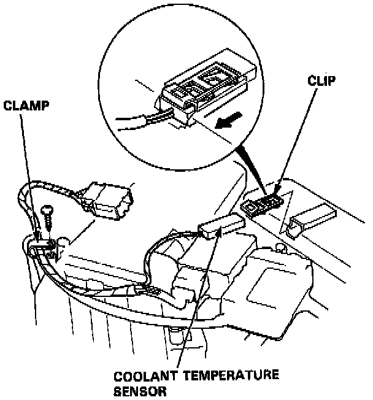

Coolant Temperature Sensor / Switch HVAC: Service and Repair

REPLACEMENT
1. Remove the dashboard lower panel. Service and Repair
2. Disconnect the 7-P connector of max cool motor and clamp, then remove the clip.
3. Remove the coolant temperature sensor from the heater evaporator unit as shown.